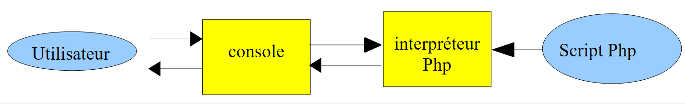
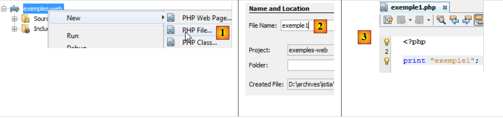
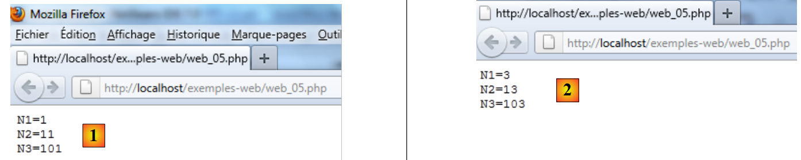

10. PHP Servers
Since PHP programs can be executed by a web server, such a program becomes a server-side program capable of serving multiple clients. From the client’s perspective, calling a web service is equivalent to requesting the URL of that service. The client can be written in any language, including PHP. In the latter case, we use the network functions we just discussed. We also need to know how to "communicate" with a web service, that is, understand the HTTP protocol used for communication between a web server and its clients. This is the purpose of the following programs.
The web client described in Section 9.2 allowed us to explore part of the HTTP protocol.

In their simplest form, client/server exchanges are as follows:
- the client opens a connection to port 80 on the web server
- it makes a request for a document
- the web server sends the requested document and closes the connection
- the client then closes the connection
The client can take various forms: HTML text, an image, a video, etc. It can be an existing document (static document) or a document generated on the fly by a script (dynamic document). In the latter case, we refer to web programming. The script for dynamically generating documents can be written in various languages: PHP, Python, Perl, Java, Ruby, C#, VB.NET, etc.
Here, we use PHP to dynamically generate text documents.
 |
- In [1], the client establishes a connection with the server, requests a PHP script, and may or may not send parameters to that script
- In [2], the web server executes the PHP script using the PHP interpreter. This script generates a document that is sent to the client [3]
- The server closes the connection. The client does the same.
The web server can handle multiple clients at once. With the WampServer software package, the web server is an Apache server, an open-source server from the Apache Foundation (http://www.apache.org/). In the following applications, WampServer must be launched. This activates three components: the Apache web server, the MySQL database management system, and the PHP interpreter.
The scripts executed by the web server will be written using the NetBeans tool. So far, we have written PHP scripts executed in a console environment:
 |
The user uses the console to request the execution of a PHP script and receive the results.
In the client/server applications that follow,
- the client script is executed in a console environment
- the server script is executed in a web environment
 |
The server's PHP script cannot be located just anywhere in the file system. This is because the web server searches for the static and dynamic documents requested of it in locations specified by the configuration. The default configuration of WampServer causes documents to be searched for in the <WampServer>/www folder, where <WampServer> is the WampServer installation folder. Thus, if a web client requests a document D with the URL [http://localhost/D], the web server will serve the document D located at the path [<WampServer>/www/D].
In the following examples, we will place the server scripts in the [www/web-examples] folder. If a server script is named S.php, it will be requested from the web server using the URL [http://localhost/exemples-web/S.php]. The document [<WampServer>/www/web-examples/S.php] will then be served.
 |
To create a server-side script with NetBeans , we will proceed as follows:
 |
- In [1], we create a new project
- In [2], we select the [PHP] category and the [PHP Application] project
 |
- in [3], we name the project
- In [4], we choose a folder for the project
- In [5], we specify that the script must be executed by a local web server (the script’s URL will be in the form http://localhost/...). The local web server will be the Apache web server from WampServer.
- In [6], we specify the project’s URL. Here, we decide that a script named S.php in the project will be accessed via the URL [http://localhost/exemples-web/S.php]. Based on the above, this means that the path to the S.php script in the file system will be [<WampServer>/www/web-examples/S.php]. This is what is specified in [7]. Here, we specify that any S.php script in the project should be copied into the Apache web server directory structure.
- in [8], the new project.
Let’s write a test script:
 |
- In [1], we create a first PHP script in the [web-examples] project
- In [2], we give it a name
- in [3], after creating it, we give it the following content
Next, WampServer must be running.
 |
- In [4], we run the web script [example1.php]. NetBeans will then launch the machine’s default browser and instruct it to display the URL [http://localhost/exemples-web/exemple1.php] [5]
- In [6], the browser displays what the server script sent to the client.
Moving forward, we will encounter two types of web clients:
- a browser as described above. We noted that the web server sends a response in the form: HTTP headers, blank line, text. The browser displays only the text.
- a PHP script that will display the entire response: HTTP headers, blank line, text.
Moving forward,
- server-side scripts will be written like [example1.php] above
- client-side scripts will be written like the console scripts we have written so far. ## 10.1. **Client/server date/time application** ### 10.1.1. **The server (web\_01)**
<?php
// time: number of milliseconds since 01/01/1970
// date-time display format
// d: day (2 digits)
// m: 2-digit month
// y: 2-digit year
// H: hour 0,23
// i: minutes
// s: seconds
print date("d/m/y H:i:s",time());
Basically, the PHP script above displays the current time on the screen. However, when executed by a web server, stream 1—which is usually associated with the screen—is redirected to the connection linking the server to its client. Therefore, in a web context, the script above sends the current time as text to the client.
Let’s run this script within NetBeans:
 |
- In [1], we run the script. A web browser is then launched.
- In [2], the URL requested by the web browser
- In [3], the text sent by the server script
The client browser uses the HTTP protocol to communicate with the web server. We have already described the structure of this protocol.
The client sends lines of text that can be broken down into three parts: HTTP headers, a blank line, and the document. The document sent to the web server is usually empty or consists of a set of parameters in the form parami=vali, where vali is a value entered by the user in an HTML form.
The server’s response has the same structure: HTTP headers, a blank line, and a document, where the document is this time the document requested by the client browser. If the client has sent parameters, the document returned generally depends on those parameters.
With the Firefox browser, you can view the actual data exchanged between the client and the web server. There is a Firefox plugin called Firebug that allows you to track this data exchange. Firebug is available at the URL [https://addons.mozilla.org/fr/firefox/addon/firebug/]. If you use the Firefox browser to visit this URL, you can download the Firebug plugin. We will assume hereafter that the Firebug plugin has been downloaded and installed. It is accessible via an option in the Firefox menu:
 |
A Firebug window opens within the Firefox browser window. This window itself has a menu:
 |
To view the client/server exchanges during an HTTP request, we enter the URL [http://localhost/exemples-web/web_01.php] in the Firefox browser. The Firebug window then fills with information:
 |
Above is a summary of the client/server exchanges:
- [1]: The client sent the HTTP request: GET /exemples-web/web_01.php HTTP/1.1 to request the document [web01.php]
- [2]: The server sent the response: HTTP/1.1 200 OK, indicating that it found the requested document.
Firebug allows you to view the complete exchanges. Simply "expand" the URL:
 |
Above, we see the HTTP headers exchanged between the client (Request) and the server (Response). It is possible to obtain the source code of the exchange, i.e., the actual lines of text exchanged [1]. We then obtain the following source code:
 |
To write a client-side script for the web server, we simply need to replicate the browser’s behavior. After establishing a connection with the server, the client-side script could send the 8 lines of the request shown above. In fact, not everything is essential, and we will only send the following three lines:
- Line 1: specifies the requested document and the HTTP protocol used
- Line 2: provides the hostname of the client script
- line 3: indicates that after the exchange, the client will close the connection to the server
Let’s now look at the server’s response. We know it was generated by the PHP script [web_01.php]. Above, we see the HTTP headers of the response. The code of the [web01.php] script shows that it did not generate them. Recall the server script’s configuration:
 |
It is the web server that generated the HTTP headers of the response. The server script can generate them itself. We’ll see an example of this a little later.
We mentioned that the web server’s response takes the form: HTTP headers, blank line, document. If the document is a text document, we can view it in the [Response] tab of Firebug:
 |
This response was generated by the [web_01.php] script.
10.1.2. A client (client1_web_01)
We will now write a client script for the previous service. We know that the client must:
- open a connection with the web server
- send the text: HTTP headers, blank line
- read the server's complete response until the server closes its connection with the client
- close the connection with the server
The client script runs in a NetBeans console environment:
 |
- in [1], the client script [client1_web_01.php] is included in the NetBeans project [examples]
- in [2], the properties of the NetBeans project [examples]
- in [3], the NetBeans project [examples] runs in "command line" mode, which we have also referred to as "console" mode.
The client script code is as follows:
<?php
// data
$HOST = "localhost";
$PORT = 80;
$serverUrl = "/web-examples/web_01.php";
// Open a connection on port 80 of $HOST
$connection = fsockopen($HOST, $PORT);
// Error?
if (!$connection) {
print "Error: $error\n";
exit;
}
// HTTP headers must end with a blank line
// GET
fputs($connection, "GET $urlServer HTTP/1.1\n");
// Host
fputs($connection, "Host: localhost\n");
// Connection
fputs($connection, "Connection: close\n");
// blank line
fputs($connection, "\n");
// The server will now respond on the $connection channel. It will send all
// its data and then close the channel. The client therefore reads everything coming from $connection
// until the channel closes
while ($line = fgets($connection, 1000)) {
print "$line";
}//while
// the client closes the connection in turn
fclose($connection);
// end
exit;
Comments
- line 8: opening a connection to the server
- line 16: HTTP GET command
- line 18: HTTP Host command
- line 20: HTTP Connection command
- line 22: empty line
- Lines 26–28: Read all text lines sent by the server until it closes the connection.
- line 30: the client closes the connection
Executing the client script produces the following results:
Comments
- Lines 1–7: the HTTP response from the web server.
- Line 8: the empty line that signals the end of the HTTP headers
- Lines 9 and beyond: the document. Here, it is a simple text representing the current date and time. This is the text written by the PHP script to output #1.
- Line 1: The server responds that it has found the requested document.
- Line 2: the server's current date and time
- Line 3: Web server identity
- line 4: indicates that the document that follows is generated by a PHP script
- line 5: number of characters in the document
- Line 6: The server indicates that after sending the document, it will close the connection
- line 7: indicates that the document sent by the server is text in HTML format. This is incorrect here. The document is plain text. When the document is not in HTML format, it is up to the PHP script to indicate this. We did not do that here.
10.1.3. A second client (client2_web_01)
The previous client displayed everything the web server sent it. In practice, we generally ignore the HTTP headers in the response and focus on the body of the document. Here, we want to retrieve the date and time sent by the server-side PHP script. We will retrieve this information using a regular expression.
<?php
// retrieve information sent by a web server
// data
$HOST = "localhost";
$PORT = 80;
$serverUrl = "/web-examples/web_01.php";
// Open a connection on port 80 of $HOST
$connection = fsockopen($HOST, $PORT);
// Error?
if (!$connection) {
print "Error: $error\n";
exit;
}
// HTTP headers must end with a blank line
// GET
fputs($connection, "GET $urlServer HTTP/1.1\n");
// Host
fputs($connection, "Host: localhost\n");
// Connection
fputs($connection, "Connection: close\n");
// blank line
fputs($connection, "\n");
// The server will now respond on the $connection channel. It will send all
// this data and then close the channel. The client therefore reads everything coming from $connection
// until it finds the line it is looking for in the format dd/mm/yy hh:mm:ss
while ($line = fgets($connection, 1000)) {
print "$line";
if (preg_match("/(\d\d)\/(\d\d)\/(\d\d) (\d\d):(\d\d):(\d\d)/", $line, $fields)) {
// retrieve the # fields
array_shift($fields); // remove the first element from the $fields array
// Retrieve the 6 fields into 6 variables
list($j, $m, $a, $h, $i, $s) = $fields;
// display result
print "\ndate_time=[$j,$m,$a,$h,$i,$s]\n";
}//if
}//while
// the client closes the connection in turn
fclose($connection);
// end
exit;
10.2. Server retrieval of parameters sent by the client
In the HTTP protocol, a client has two methods for passing parameters to the web server:
- it requests the service URL in the form
GET url?param1=val1¶m2=val2¶m3=val3… HTTP/1.0
where the valid values must first be encoded so that certain reserved characters are replaced by their hexadecimal values.
- it requests the service URL in the form
POST url HTTP/1.0
then, among the HTTP headers sent to the server, includes the following header:
The rest of the headers sent by the client end with a blank line. It can then send its data in the form
where the valid values must, as with the GET method, be encoded beforehand. The number of characters sent to the server must be N, where N is the value declared in the header
The PHP script that retrieves the previous parami parameters sent by the client obtains their values from the array:
- $_GET["parami"] for a GET request
- $_POST["parami"] for a POST request
10.2.1. The GET client (client1_web_02)
The PHP script below sends three parameters [last_name, first_name, age] to the server.
<?php
// client: sends first_name, last_name, age to the server using the GET method
// data
$HOST = "localhost";
$PORT = 80;
$URL = "/web-examples/web_02.php";
list($first_name, $last_name, $age) = array("jean-paul", "de la hûche", 45);
// connect to the web server
$connection = fsockopen($HOST, $PORT);
// return if error
if (!$connection) {
print "Failed to connect to the site ($HOST, $PORT): $error";
exit;
}//if
// send information to the PHP server
// encode the information
$info = "first_name=" . urlencode(utf8_decode($first_name)) . "&last_name=" . urlencode(utf8_decode($last_name)) . "&age=" . urlencode("$age");
// console log
print "info sent to the server (GET)=$info\n";
print "Requested URL=[$URL?$info]\n\n";
// HTTP headers must end with an empty line
// GET
fputs($connection, "GET $URL?$info HTTP/1.1\n");
// Host
fputs($connection, "Host: localhost\n");
// Connection
fputs($connection, "Connection: close\n");
// empty line
fputs($connection, "\n");
// The server will now respond on the $connection channel. It will send all
// its data and then close the channel. The client reads everything coming from $connection until the channel is closed
while ($line = fgets($connection, 1000))
print "$line";
// the client closes the connection in turn
fclose($connection);
Comments
- line 7: URL of the server script
- line 8: values of the 3 parameters
- line 10: opens a connection to the web server
- line 18: encoding of the 3 parameters. We are working in a script written in NetBeans with UTF-8 character encoding. Therefore, the 3 parameter values from line 8 are encoded in UTF-8. The utf8_decode function converts their encoding to ISO-8859-1. Once this is done, they can be encoded for the URL. All non-alphabetic characters are replaced by %xx, where xx is the hexadecimal value of the character. Spaces are replaced by the + sign.
- Line 24: The requested URL is $URL?$infos, where $infos is in the form last_name=val1&first_name=val2&age=val3. ### 10.2.2. **The server (web\_02)**
The server simply displays what it receives.
<?php
// error handling
ini_set("display_errors", "off");
// server retrieval of information sent by the client
// here first_name=P&last_name=N&age=A
// this information is automatically available in the variables
// $_GET['first_name'], $_GET['last_name'], $_GET['age']
// we send them back to the client
// UTF-8 header
header("Content-Type: text/plain; charset=utf-8");
// parameters sent to the server
$first_name = isset($_GET['first_name']) ? $_GET['first_name'] : "";
$lastName = isset($_GET['lastName']) ? $_GET['lastName'] : "";
$age = isset($_GET['age']) ? $_GET['age'] : "";
// response to the client
$response = "information received from the client [" .
utf8_encode(htmlspecialchars($first_name, ENT_QUOTES)) .
"," . utf8_encode(htmlspecialchars($last_name, ENT_QUOTES)) .
"," . utf8_encode(htmlspecialchars($age, ENT_QUOTES)) . "]\n";
print $response;
Comments
- line 13: sets the HTTP header "Content-Type". By default, the web server sends the header
, which indicates that the response is text in HTML format. Here, the response will be unformatted text with characters encoded in UTF-8:
HTTP headers must be sent before the server's response. Therefore, in the code above, the call to the header function must come before any print statements.
- Lines 16–18: We retrieve the three parameters from the $_GET array.
- Line 21: We construct the string that will be sent as a response to the client. Certain characters have special meanings in HTML and must be replaced with HTML entities to be displayed. htmlspecialchars($string) replaces all these characters with their equivalents in the $string. For example, the $ character becomes &. Then, since we specified in line 13 that the response would be UTF-8 text, we encode the retrieved values in UTF-8.
- Line 25: The response is sent to the client
Let’s run the [web_02] script from NetBeans. A browser will then open to display the URL [http://localhost/exemples-web/web_02.php]:
 |
- In [1], the browser displays the URL [http://localhost/exemples-web/web_02.php]. Because we did not append parameters to this URL, the server responded with empty parameters. Recall that the server’s response is the one written with the print statement.
- In [2], we append parameters to the URL. This time, the server script returns them correctly.
Note that NetBeans is not required to run a server script. Simply enter the server script’s URL into a browser to execute it.
Test 2
We run the client [client1_web_02.php] in NetBeans. We receive the following response:
- Line 1: Encoding of the 3 parameters. We can see that the character û has become %FB.
- line 12: the server's response
10.2.3. The POST client (client2_web_03)
An HTTP client sends the following text sequence to the web server: HTTP headers, blank line, document. In the previous client, this sequence was as follows:
There was no document. There is another way to transmit parameters, known as the POST method. In this case, the text sequence sent to the web server is as follows:
This time, the parameters that were included in the HTTP headers for the GET client are part of the document sent after the headers in the POST client.
The POST client script is as follows:
<?php
// client: sends first_name, last_name, age to the server using the POST method
// data
$HOST = "localhost";
$PORT = 80;
$URL = "/web-examples/web_03.php";
list($first_name, $last_name, $age) = array("jean-paul", "de la hûche", 45);
// connect to the web server
$connection = fsockopen($HOST, $PORT);
// return if error
if (!$connection) {
print "Failed to connect to the site ($HOST, $PORT): $error";
exit;
}//if
// send information to the PHP server
// we encode the information
$info = "first_name=" . urlencode(utf8_decode($first_name)) . "&last_name=" . urlencode(utf8_decode($last_name)) . "&age=" . urlencode("$age");
print "client: info sent to the server (POST): $infos\n";
// We connect to the URL $URL by posting (POST) parameters to it
// HTTP headers must end with an empty line
// POST
fputs($connection, "POST $URL HTTP/1.1\n");
// Host
fputs($connection, "Host: localhost\n");
// Connection
fputs($connection, "Connection: close\n");
// Content-type
fputs($connection, "Content-type: application/x-www-form-urlencoded\n");
// Content-length
// Send the size (number of characters) of the data to be sent
fputs($connection, "Content-length: " . strlen($info) . "\n");
// Send an empty line
fputs($connection, "\n");
// Send the data
fputs($connection, $data);
// The server will now respond on the $connection channel. It will send all
// its data and then close the channel. The client reads everything coming from $connection
// until the channel closes
while ($line = fgets($connection, 1000))
print "$line";
// The client closes the connection in turn
fclose($connection);
Comments
- Line 7: The URL of the web service to which the POST client will connect. This web service will be described shortly.
- Line 8: the parameters to be sent to the web service
- Line 10: Connection to the web server
- line 18: encoding of the parameters to be sent to the web service
- line 23: HTTP POST command
- line 25: HTTP Host command
- line 27: HTTP Connection header
- line 29: HTTP Content-Type header. We have already encountered this HTTP header. It is present every time a document is sent. A web server sending an HTML document uses the HTTP
If it sends unformatted text, it uses the HTTP header
Our POST client sends a document that is text in the form param1=val1¶m2=val2&.... This type of document has the type application/x-www-form-urlencoded. We won’t explain why, as that would require us to explain what a web form is.
- Line 32: Content-length directive. We have already encountered this HTTP header. It is present every time a document is sent. It indicates the number of bytes in the document.
- Line 34: The empty line indicating the end of the HTTP headers
- Line 36: Sending the parameters
- Lines 40–41: Reading the complete response from the server
- Line 43: Closing the connection
10.2.4. The server (web_03)
The web service [web_03] does the same thing as the web service [web_02]. It reads the parameters sent by the POST client and sends them back to the client. Its code is as follows:
<?php
// error handling
ini_set("display_errors", "off");
// UTF-8 header
header("Content-Type: text/plain; charset=utf-8");
// Server retrieval of information sent by the client
// here first_name=P&last_name=N&age=A
// this information is automatically available in the variables
// $_POST['first_name'], $_POST['last_name'], $_POST['age']
// we send them back to the client
// parameters sent to the server
$firstName = isset($_POST['firstName']) ? $_POST['firstName'] : "";
$lastName = isset($_POST['lastName']) ? $_POST['lastName'] : "";
$age = isset($_POST['age']) ? $_POST['age'] : "";
// response to the client
$response = "information received from the client [" .
utf8_encode(htmlspecialchars($first_name, ENT_QUOTES)) .
"," . utf8_encode(htmlspecialchars($last_name, ENT_QUOTES)) .
"," . utf8_encode(htmlspecialchars($age, ENT_QUOTES)) . "]\n";
print $response;
Comments
- lines 14–16: The parameters sent by a POST client become available in the $_POST array for the web service receiving them.
- line 6: HTTP Content-Type header. You might be surprised not to find the HTTP Content-Length header in the HTTP headers, which indicates the size of the document sent back to the client. We saw that the web server sends HTTP headers by default. The Content-Length header is one of them.
Once the server script is written in NetBeans, it becomes immediately available via the WampServer Apache server. Remember that this is achieved through configuration (see paragraph 10). We launch the client, which queries the server, and then receive the following response:
- lines 2-10: the server's response
- lines 2-8: the HTTP headers
- line 10: the document
- line 6: the HTTP Content-Length header. Since this header was not generated by the server script, it was generated by the web server.
- Line 8: the only header generated by the server script ## 10.3. **Retrieving Web Server Environment Variables**
A server script runs in a web environment that it can access. This environment is stored in the $_SERVER dictionary. First, we write a server application that sends the contents of this dictionary to its clients.
10.3.1. The server (web_04)
<?php
// error handling
ini_set("display_errors", "off");
// UTF-8 header
header("Content-Type: text/plain; charset=utf-8");
// Return the list of variables available in the server environment to the client
foreach ($_SERVER as $key => $value) {
print "[$key,$value]\n";
}
- The (key, value) pairs from the $_SERVER dictionary are sent to clients.
The result obtained when the client is a web browser is as follows:

Here is the meaning of some of the variables (for Windows. On Linux, they would be different):
CMDE represents the HTTP header sent by the client. We have access to all these headers. | |
The path to the executables on the machine where the server script is running | |
The path to the DOS command interpreter | |
the extensions of executable files | |
the Windows installation folder | |
the web server signature. Nothing here. | |
the type of web server | |
The Internet name of the web server machine | |
the web server's listening port | |
the IP address of the web server machine | |
the client's IP address. In this case, the client was on the same machine as the server. | |
the client's communication port | |
the root of the directory tree of documents served by the web server | |
the email address of the web server administrator | |
the full path of the server script | |
the version of the HTTP protocol used by the web server | |
the HTTP method used by the client. There are four: GET, POST, PUT, DELETE | |
the parameters sent with a GET request /url?parameters | |
The URL requested by the client. If the browser requests the URL http://machine[:port]/uri, REQUEST_URI will be uri | |
$_SERVER['SCRIPT_FILENAME'] = $_SERVER['DOCUMENT_ROOT'] . $_SERVER['SCRIPT_NAME'] |
10.3.2. The client (client1_web_04)
The client simply displays everything the server sends it.
<?php
// data
$HOST = "localhost";
$PORT = 80;
$serverUrl = "/web-examples/web_04.php";
// Open a connection on port 80 of $HOST
$connection = fsockopen($HOST, $PORT);
// error?
if (!$connection) {
print "Error: $error\n";
exit;
}
// Connect to the web server via a URL
// HTTP headers must end with a blank line
// GET
fputs($connection, "GET $serverUrl HTTP/1.1\n");
// Host
fputs($connection, "Host: localhost\n");
// Connection
fputs($connection, "Connection: close\n");
// blank line
fputs($connection, "\n");
// The server will now respond on the $connection channel. It will send all
// its data and then close the channel. The client therefore reads everything coming from $connection
// until the channel closes
while ($line = fgets($connection, 1000)) {
print "$line";
}//while
// the client closes the connection in turn
fclose($connection);
// end
exit;
10.4. Web Session Management
In the previous client/server examples, the process was as follows:
- the client opens a connection to port 80 on the web server
- it sends the text sequence: HTTP headers, blank line, [document]
- in response, the server sends a sequence of the same type
- the server closes the connection to the client
- the client closes the connection to the server
If the same client makes a new request to the web server shortly thereafter, a new connection is established between the client and the server. The server cannot tell whether the connecting client has visited before or if this is a first-time request. Between connections, the server “forgets” its client. For this reason, the HTTP protocol is said to be a stateless protocol. However, it is useful for the server to remember its clients. For example, if an application is secure, the client will send the server a username and password to authenticate itself. If the server "forgets" its client between connections, the client would have to authenticate itself with every new connection, which is not feasible.
To track a client, the server proceeds as follows: when a client makes an initial request, the server includes an identifier in its response, which the client must then send back with every subsequent request. Using this identifier—which is unique to each client—the server can recognize the client. It can then maintain a record for that client in the form of a file uniquely associated with the client’s identifier.
Technically, this is how it works:
- In the response to a new client, the server includes the HTTP header Set-Cookie: Key=Identifier. It does this only on the first request.
- In subsequent requests, the client will send its identifier via the HTTP Cookie header: Key=Identifier so that the server can recognize it.
One might wonder how the server knows it is dealing with a new client rather than a returning one. It is the presence of the HTTP Cookie header in the client’s HTTP headers that tells it. For a new client, this header is absent.
The set of connections from a given client is called a session.
10.4.1. The configuration file
For session management to work correctly with PHP, you must verify that it is properly configured. On Windows, its configuration file is PHP.ini. Depending on the execution context (console, web), the [PHP.ini] configuration file must be located in different directories. To find these, use the following script:
Line 4: The phpinfo() function provides information about the PHP interpreter executing the script. In particular, it returns the path to the [PHP.ini] configuration file being used.
In a console environment, you will get a result similar to the following:
Line 2: The main configuration file is c:\windows\PHP.ini
Line 3: A secondary configuration file is C:\DBServers\wamp21\bin\PHP\php5.3.5\PHP.ini. It allows you to modify certain configuration options in the main configuration file.
In a web environment, the following result is obtained:

The secondary configuration file here is not the same as in the console environment. It is the latter that we will examine. In this file, there is a session section:
- Line 1: Client session data is saved to a file
- line 3: the directory where session data is saved. If this directory does not exist, no error is reported and session management does not work.
- Lines 4-5: indicate that the session ID is managed by the HTTP Set-Cookie and Cookie headers
- line 6: the Set-Cookie header will be in the form Set-Cookie: PHPSESSID=session_id
- Line 7: A client session is not started automatically. The server script must explicitly request it using the session_start() function. ### 10.4.2. **Server 1 (web\_05)**
Session ID management is transparent to a web service. This identifier is managed by the web server. A web service accesses the client’s session via the session_start() function. From that point on, the web service can read from and write to the client’s session via the $_SESSION array. The following code demonstrates session management for three counters.
<?php
// error handling
ini_set("display_errors", "off");
// UTF-8 header
header("Content-Type: text/plain; charset=utf-8");
// start a session
session_start();
// set 3 variables in the session
if (!isset($_SESSION['N1'])) {
$_SESSION['N1'] = 0;
}
if (!isset($_SESSION['N2'])) {
$_SESSION['N2'] = 10;
}
if (!isset($_SESSION['N3'])) {
$_SESSION['N3'] = 100;
}
// increment the 3 variables
$_SESSION['N1']++;
$_SESSION['N2']++;
$_SESSION['N3']++;
// send information to the client
print "N1=".$_SESSION['N1']."\n";
print "N2=".$_SESSION['N2']."\n";
print "N3=".$_SESSION['N3']."\n";
// end of session
session_close();
- line 9: start of a client session
- lines 11-13: the $_SESSION array is a key-value dictionary. Data stored in this dictionary persists across requests from the same client. It acts as the client’s memory on the server.
- lines 11-19: if the three counters N1, N2, N3 are not in the session, they are added to it.
- lines 21–23: they are incremented by one
- lines 25–27: their values are sent to the client
In the client/server relationship, the management of the client session on the server depends on both parties, the client and the server:
- the server is responsible for sending an identifier to the client upon its first request
- the client is responsible for sending this identifier back with each new request. If it does not, the server will assume it is a new client and generate a new identifier for a new session.
Results
We use a web browser as the client. By default (actually, by configuration), the browser does indeed send back to the server the session identifiers that the server sends to it. As requests are made, the browser will receive the three counters sent by the server and will see their values increment.
 |
- In [1], the first request to the web service [web_05]
- In [2], the third request shows that the counters are indeed incremented. The counter values are indeed being stored across requests.
Let’s use Firebug to view the HTTP headers exchanged between the server and the client. We close Firefox to end the current session with the server, reopen it, and enable Firebug. We request the service |web_05]:
 |
Above, we see the session ID sent by the server in its response to the client’s first request. It uses the HTTP Set-Cookie header.
Let’s make a new request by refreshing (F5) the page in the web browser:
 |
Here, we’ll notice two things:
- The web browser sends the session ID back with the HTTP Cookie header.
- In its response, the web service no longer includes this identifier. It is now the client’s responsibility to send it with each of its requests. ### 10.4.3. **Client 1 (client1\_web\_05)**
We will now write a client-side script based on the previous server-side script. In its session management, it must behave like the web browser:
- In the server’s response to its first request, it must find the session ID that the server sends it. It knows it will find it in the HTTP Set-Cookie header.
- For each subsequent request, it must send the identifier it received back to the server. It will do this using the HTTP Cookie header.
The client code is as follows:
<?php
// data
$HOST = "localhost";
$PORT = 80;
$serverUrl = "/web-examples/web_05.php";
// tests
$cookie = "";
for ($i = 0; $i < 5; $i++) {
list($error, $cookie, $N1, $N2, $N3) = connect($HOST, $PORT, $serverUrl, $cookie);
print "----------------------------\n";
print "client(error,cookie,N1,N2,N3)=[$error,$cookie,$N1,$N2,$N3]\n";
print "----------------------------\n";
}
// end
exit;
function connect($HOST, $PORT, $serverUrl, $cookie) {
// connects the client to ($HOST, $PORT, $serverURL)
// sends the $cookie if it is not empty
// displays all lines received in response
// Open a connection on port 80 of $HOST
$connection = fsockopen($HOST, $PORT);
// error?
if (!$connection)
return array("Error connecting to the server ($HOST, $PORT)");
// Connect to $serverurl
// HTTP headers must end with an empty line
// GET
fputs($connection, "GET $serverURL HTTP/1.1\n");
// Host
fputs($connection, "Host: localhost\n");
// Connection
fputs($connection, "Connection: close\n");
// send the cookie if it is not empty
if ($cookie) {
fputs($connection, "Cookie: $cookie\n");
}//if
// send an empty line
fputs($connection, "\n");
// display the web server's response
// and make sure to retrieve any cookies and the Ni values
$N = "";
while ($line = fgets($connection, 1000)) {
print "$line";
// cookie - only on the first response
if (!$cookie) {
if (preg_match("/^Set-Cookie: (.*?)\s*$/", $line, $fields)) {
$cookie = $fields[1];
}
}
// value of N1
if (preg_match("/^N1=(.*?)\s*$/", $line, $fields))
$N1 = $fields[1];
// value of N2
if (preg_match("/^N2=(.*?)\s*$/", $line, $fields))
$N2 = $fields[1];
// value of N3
if (preg_match("/^N3=(.*?)\s*$/", $line, $fields))
$N3 = $fields[1];
}//while
// close the connection
fclose($connection);
// return
return array("", $cookie, $N1, $N2, $N3);
}
Comments
- lines 3-16: the main program
- lines 18–67: the connect function
- Lines 9–14: The client calls the server five times and displays the successive values of counters N1, N2, and N3. If the session is managed correctly, these counters should be incremented by 1 with each new request.
- Line 10: The `connecte` function uses the parameters `$HOTE`, `$PORT`, and `$urlServeur` to connect the client to the web service. The `$cookie` parameter represents the session ID. On the first call, it is an empty string. On subsequent calls, it is the session ID sent by the server in response to the client’s first call. The `connecte` function returns the values of the three counters `$N1`, `$N2`, `$N3`, the session ID `$cookie`, and any errors in `$erreur`.
- Line 18: The `connecte` function has the characteristics of a standard HTTP client. We will only comment on the new features.
- Lines 30–40: Sending HTTP headers.
- Lines 36–38: If the session ID is known, it is sent to the server
- Lines 44–66: processing of all text lines sent by the server
- Lines 47–51: If the session ID has not yet been retrieved, it is retrieved from the HTTP Set-Cookie header using a regular expression.
- lines 53-54: the N1 counter is also obtained using a regular expression
- lines 56–57, 59–60: same for counters N2 and N3
- line 63: Close the connection to the server.
- Line 65: The results are returned as an array.
Executing the client script causes the following to be displayed in the NetBeans console:
- Line 5: In its first response, the server sends the session ID. In subsequent responses, it no longer sends it.
- It is clear that the web server retains the values of (N1, N2, N3) across the client’s requests. This is called session tracking.
The following two examples show that you can also save the values of an array or an object.
10.4.4. Server 2 (web_06)
The following server script demonstrates that an array or a dictionary can be stored in a session.
<?php
// error handling
ini_set("display_errors", "off");
// UTF-8 header
header("Content-Type: text/plain; charset=utf-8");
// start a session
session_start();
// save an array and a dictionary
// initialize or modify the array
if (isset($_SESSION['array'])) {
for ($i = 0; $i < count($_SESSION['array']); $i++) {
$_SESSION['array'][$i]++;
}
} else {
for ($i = 0; $i < 10; $i++) {
$_SESSION['array'][$i] = $i * 10;
}
}
// initialize or modify the dictionary
if (isset($_SESSION['dico'])) {
foreach (array_keys($_SESSION['dico']) as $key) {
$_SESSION['dico'][$key]++;
}
} else {
$_SESSION['dico'] = array("zero" => 0, "ten" => 10, "twenty" => 20);
}
// send information to the client
print "array=" . join(",", $_SESSION['array']) . "\n";
print "dico=";
foreach ($_SESSION['dico'] as $key => $value) {
print "($key, $value) ";
}
print "\n";
Comments
- lines 17-19: an array is initially created if it does not already exist
- lines 12–15: if it already exists, its elements are incremented by 1
- line 27: a dictionary with numeric values is initialized if it does not already exist
- lines 22-25: if it is already in the session, its numerical values are incremented by 1
- lines 30-35: the array and dictionary are sent to the client ### 10.4.5. **Client 2 (client1\_web\_06)**
<?php
// data
$HOST = "localhost";
$PORT = 80;
$serverUrl = "/web-examples/web_06.php";
// tests
$cookie = "";
for ($i = 0; $i < 5; $i++) {
connect($HOST, $PORT, $serverUrl, $cookie);
}
// end
exit;
function connect($HOST, $PORT, $serverUrl, &$cookie) {
// connects the client to ($HOST, $PORT, $serverURL)
// sends the $cookie if it is not empty
// displays all lines received in response
// the cookie is passed by reference to be shared between
// the called program and the calling program
// Open a connection on port $PORT of $HOST
$connection = fsockopen($HOST, $PORT);
// error?
if (!$connection)
return array("Error connecting to the server ($HOST, $PORT)");
// HTTP headers must end with an empty line
// GET
fputs($connection, "GET $serverURL HTTP/1.1\n");
// Host
fputs($connection, "Host: localhost\n");
// Connection
fputs($connection, "Connection: close\n");
// send the cookie if it is not empty
if ($cookie) {
fputs($connection, "Cookie: $cookie\n");
}
// send an empty line
fputs($connection, "\n");
// display the web server's response
// and make sure to retrieve any cookie
while ($line = fgets($connection, 1000)) {
print "$line";
// cookie - only on the first response
if (!$cookie) {
if (preg_match("/^Set-Cookie: (.*?)\s*$/", $line, $fields)) {
$cookie = $fields[1];
}
}
}
// Close the connection
fclose($connection);
// return
return "";
}
The client code is similar to the client code already commented out.
10.4.6. Server 3 (web_07)
The following server script shows that an object can be stored in a session.
<?php
// error handling
ini_set("display_errors", "off");
// UTF-8 header
header("Content-Type: text/plain; charset=utf-8");
// start a session
session_start();
// initialize or modify a Person object
if (isset($_SESSION['person'])) {
$person = $_SESSION['person'];
// increment the age
$person = $_SESSION['person'];
} else {
// define the person
$_SESSION['person'] = new Person("paul", "langévin", 10);
}
// display to the client
print "person=".$_SESSION['personne']."\n";
// end
exit;
// ----------------------------------------------------------------
class Person {
// class attributes
private $firstName;
private $lastName;
private $age;
// getters and setters
public function getFirstName() {
return $this->firstName;
}
public function getLastName() {
return $this->lastName;
}
public function getAge() {
return $this->age;
}
public function setFirstName($firstName) {
$this->firstName = $firstName;
}
public function setLastName($lastName) {
$this->lastName = $lastName;
}
public function setAge($age) {
$this->age = $age;
}
// constructor
function __construct($firstName, $lastName, $age) {
// we use the set methods
$this->setFirstName($firstName);
$this->setLastName($lastName);
$this->setAge($age);
}
// toString method
function __toString() {
return "[$this->firstName,$this->lastName,$this->age]";
}
}
Comments
- line 17: We add a Person object to the session if it isn't already there.
- lines 11-15: if it is already there, we increment its age by 1
- line 20: we send the Person object to the client.
10.4.7. Client 3 (client1_web_07)
<?php
// data
$HOST = "localhost";
$PORT = 80;
$serverUrl = "/web-examples/web_07.php";
// tests
$cookie = "";
for ($i = 0; $i < 5; $i++) {
connect($HOST, $PORT, $serverUrl, $cookie);
}//if
// end
exit;
function connect($HOST, $PORT, $serverUrl, &$cookie) {
...
}
Comments
- Line 15: The connect function is identical to the one in the previous client script